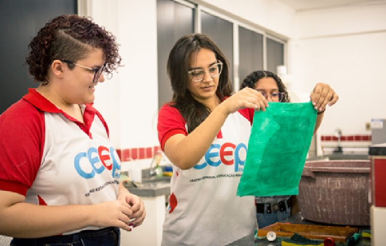
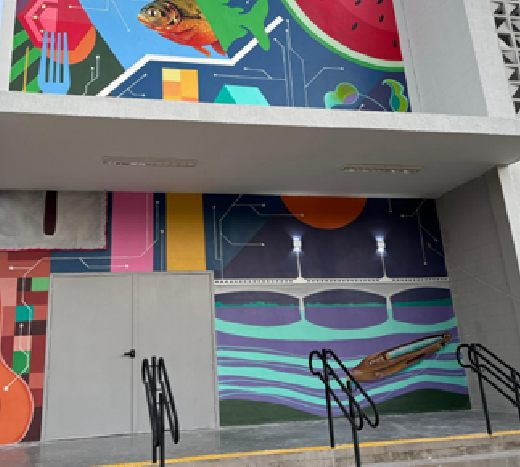

Mapeia
As potencialidades econômicas e sociais do território.
A Subcoordenadoria de Educação Profissional e Tecnológica (SUEP) é a unidade da Secretaria de Estado da Educação, do Esporte e do Lazer (SEEC-RN) responsável pelo planejamento, coordenação e acompanhamento da política de EPT na rede pública estadual.
Siga a SUEP no Instagram
As potencialidades econômicas e sociais do território.
Estudantes, professores, gestores e o setor produtivo local.
A comunidade escolar sobre as possibilidades da EPT.
Com base nos dados e nas vozes do território.
A metodologia está no Guia de Adesão à EPT e foi reconhecida pelo MEC/Setec como referência nacional: é ela que garante que cada curso tenha identidade local e demanda real.
Percentuais sobre as 142 unidades visitadas. Fonte: pesquisa de visitas técnicas da SUEP 2026.
A Subcoordenadoria é instituída para acompanhar e monitorar o desenvolvimento da EPT na rede estadual (Decreto nº 15.035).
Nasce o Centro Estadual de Educação Profissional Senador Jessé Pinto Freire, primeira unidade dedicada só à formação técnica.
Convênios com a SETEC/MEC para construir 10 CEEPs e reformar escolas da rede.
67 instituições ofertantes, cerca de 7,4 mil matrículas e presença em 47 municípios.
O Decreto nº 32.286 cria a política estadual (PEEPT/RN) e os Institutos Estaduais (IERNs).
Natal, Tangará, Jardim de Piranhas, Alexandria e Campo Grande: a maior expansão de infraestrutura da história da EPT potiguar.
22.430 matrículas, mais de 203% acima de 2019, com 18 cursos técnicos e o novo PNE 2026–2036 orientando o próximo ciclo.

Ofertam cursos técnicos integrados ao ensino médio, em tempo integral ou parcial.

Centros Estaduais de Educação Profissional, a base histórica da EPT no RN, ao lado do CENEP.

Institutos Estaduais de Educação Profissional, Tecnologia e Inovação: ensino, pesquisa, extensão e inovação.
Em ordem alfabética.